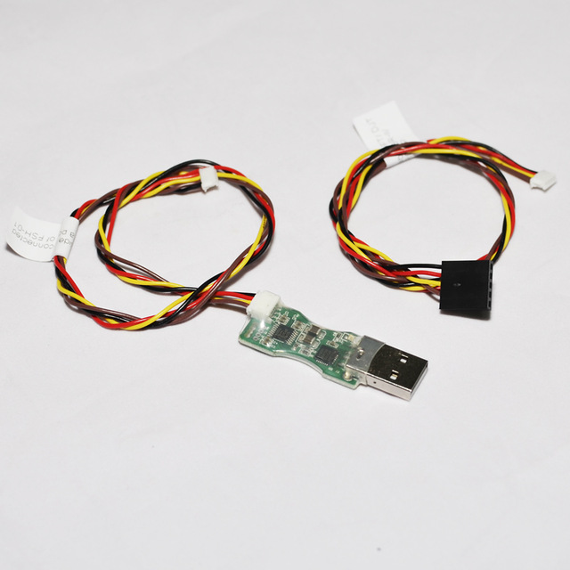
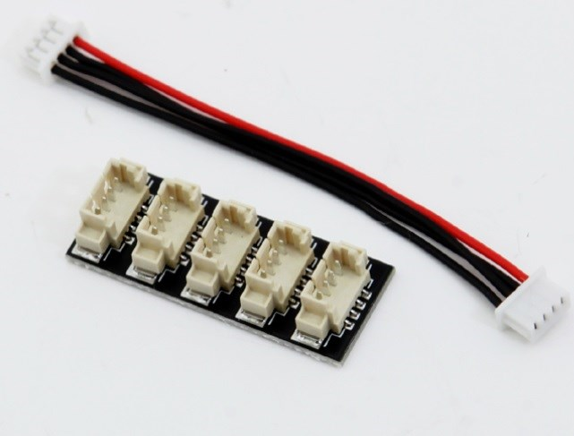

Unused Parts
Unused parts
The following are parts that were originally included in the parts.md page but were ultimately never used.
| Price | Description |
|---|---|
| €4 |  FUL-1 TTL to RS232 converter - connects the telemetry port of the flight controller to the receiver (link). |
| €9 |  FUC-3 upgrade cable (link). |
| €2.50 |  SPC (Smart Port converter) (link). |
| €8 |  External LED and USB connector (link). |
| €2.50 |  I2C splitter - share the Pixhawk I2C connector between the GPS module's compass connector and the external LED and USB connector (link). |
| €5 |  F450/F550 landing gear (link). |
| €4.50 |  Battery monitor alarm (link). |
| €7.50 |  T-plug charger cable - connects battery to charger (link). |
| €3 |  Male T-plug to female XT60 adaptor - connects the battery to the power module (link). |
I was put off adding the landing gear by two things. The most important being the realization that it would make the craft much taller - without the landing gear legs you can transport the craft in a bag, with them you'd really need some kind of more substantial box-like case, making it harder to transport without a car. The second thing that put me off was this blog post that showed that the legs could act like levers and increase the damage to the frame in the case of the crash. This became a real worry as crashing turned out to be a major part of getting used to the small practice drone that I bought before flying this build. However the general concensus seems to be that the legs more often help to absorb the shock of a crash with the situation reported in the blog being contrary to the norm.